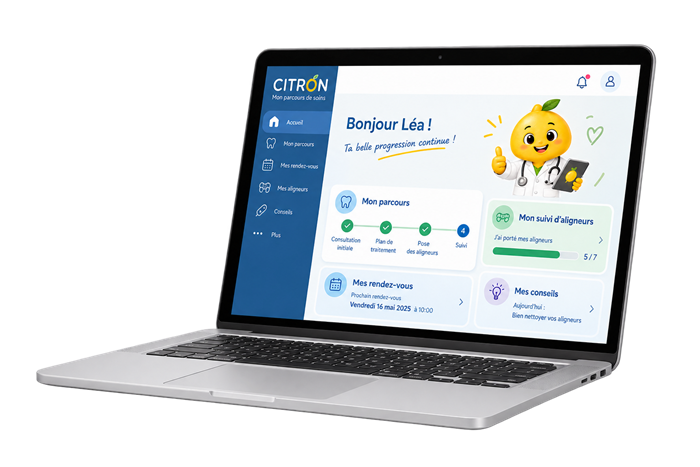
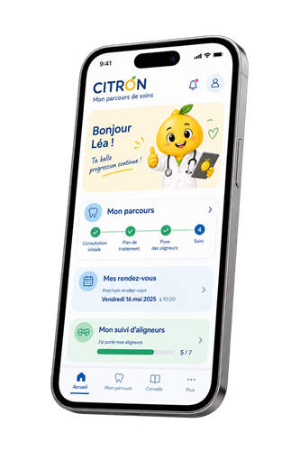

Une approche globale
De la prévention au suivi à long terme.
CITRON® est une plateforme numérique qui facilite la coordination entre les professionnels de santé et accompagne les familles tout au long du parcours de soins, pour une meilleure prise en charge des troubles respiratoires et obstructifs du sommeil.
Mieux respirer,
mieux grandir,
mieux dormir.
Des outils pour une coordination plus fluide et des soins plus efficaces.

Une coordination
au service de chaque enfant
Un accompagnement simple et rassurant, à chaque étape.

Des réponses
à chaque étape
CITRON® s'appuie sur des principes forts pour offrir une prise en charge globale et coordonnée.
De la prévention au suivi à long terme.
Entre tous les acteurs du parcours de soins.
Pour les enfants et leurs familles.
Des données protégées et un accès simplifié.
Toujours plus d'outils et de ressources.
Pour un avenir plus sain, aujourd'hui et demain.
Une démarche simple en 4 étapes
Je crée mon compte praticien ou patient.
Des solutions adaptées à mon profil.
Avec les professionnels et/ou l'équipe soignante.
Tout au long du parcours de soins.
Connectez-vous à votre espace professionnel CITRON.
Votre espace prescripteur CITRON
À transmettre au patient pour se connecter à l'Espace Patient.
—
Sélectionnez votre spécialité, pour la saisie d'une consultation
Retrouvez ici l'ensemble des consultations du patient.